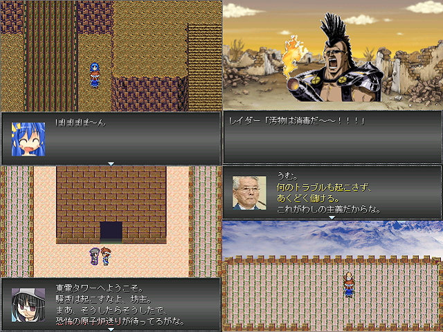

No.49-もしもFalloutしたら 体験版

■もしもFalloutしたら 体験版 Ｖａｕｌｔ１０１のアイツ
紹介文
何故こんな時期にこんな作品を・・・？ いいえ、こんな時期だからこそ、こんな作品をｔｋるんです。 ただ、主人公は明らかにＶａｕｌｔ１０１のアイツの器ではないので、 キャラクター性に大幅な梃子入れを施し、別人になってもらいました。 本当は夏頃に体験版公開しようかと考えてましたが、 明らかに今しかわろえないネタが多数あるので、 計画前倒しで参加することにしました。体験版なのに間に合わなかったとかありえそう。 ＳＳは完全にやっつけ。
管理人から一言: リアルfalloutだけはまじかんべんな！！
© VIPRPG